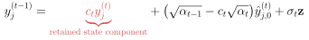
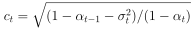
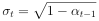

Let yj(t) denote local plan j at denoising step t.
The sampling transition combines the
denoised estimate, the noise direction predicted from the current state, and fresh Gaussian noise:
Scroll equations horizontally to read all terms.
The predicted noise direction is computed from the current noisy state and reused to construct the next state.
Substituting the definition of the denoised estimate makes this dependence explicit:

where

.
For a fixed denoised estimate, the retained state component
ctyj(t)
carries part of the current noisy state into the next state, even when fresh Gaussian noise is added.
Increasing the noise standard deviation σ
t reduces
ct.
At the maximal admissible value,

,
the coefficient becomes zero. The denoised estimate still depends on the current plan and its neighbors.
In the local model analyzed in Proposition 1, the denoised estimate stays at the midpoint between two incompatible modes
while an overlap coordinate is in the mode-averaged region. Maximal-noise transitions minimize the probability of remaining
in this region throughout a fixed sequence of denoising steps. Retaining the predicted noise direction increases this
probability under the same model.

 and goal
and goal
 .
A trajectory is valid when all its states and segment midpoints lie within the shaded ring,
so feasible plans follow either the upper or the lower half of the circle. Invalid plans are drawn in red.
CompDiffuser often generates trajectories through the interior of the circle, where they depart from the
regions supported by the training data, and increasing the number of denoising steps does not reliably resolve this.
Using the same trained model and composition rule, MaxCD produces more valid plans along the circle.
.
A trajectory is valid when all its states and segment midpoints lie within the shaded ring,
so feasible plans follow either the upper or the lower half of the circle. Invalid plans are drawn in red.
CompDiffuser often generates trajectories through the interior of the circle, where they depart from the
regions supported by the training data, and increasing the number of denoising steps does not reliably resolve this.
Using the same trained model and composition rule, MaxCD produces more valid plans along the circle.